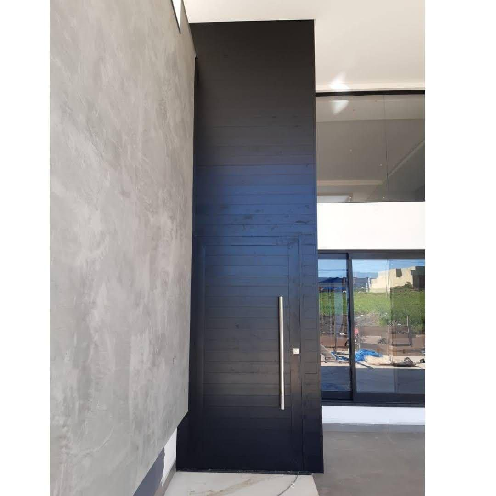

Fabricação própria
Produzimos portas, portões, coberturas e guarda-corpos na nossa própria estrutura — sem depender de terceirizados no meio do caminho.
Socorro/SP · 19 anos de mercado
Fabricação própria, fornecedores premium e acabamento sob medida — para residências, construtoras e escritórios de arquitetura em Socorro, região e São Paulo.
5,0 no Google — avaliação verificada
Quem somos
A FC Serralheria de Alumínio e Vidro é uma fábrica própria de esquadrias de alumínio e instalação de vidros, com base em Socorro/SP. Produzimos portas, janelas, portões, coberturas, guarda-corpos e box para banheiro — das linhas de entrada, como Suprema e Normatizada 25, até linhas de alto padrão, como Gold 42, Gold 30, Perfetta e Minimalista.
À frente do atendimento está o Vinicius Neris, que acompanha pessoalmente cada projeto, da visita técnica à instalação final, com matéria-prima de fornecedores premium como Tavares Alumínio, Hermaglass e Udinese Acessórios.
Com a expansão para São Paulo e demais cidades do interior, hoje também atendemos construtoras, arquitetos renomados como Breno Freitas Arquitetura e designers de interiores fora do Circuito das Águas, sem abrir mão do mesmo padrão de qualidade e acabamento.
Fale conosco »Por que a FC Serralheria
Produzimos portas, portões, coberturas e guarda-corpos na nossa própria estrutura — sem depender de terceirizados no meio do caminho.
Quase duas décadas atendendo construtoras, arquitetos e designers de interiores com pontualidade e acabamento impecável.
Trabalhamos só com matéria-prima rastreável de fornecedores reconhecidos, como Tavares Alumínio, Hermaglass e Udinese Acessórios.
Da linha de entrada à linha alto padrão, cada esquadria é especificada para o vão, o estilo e o orçamento do seu projeto.
O que fazemos
Do portão de entrada à fachada envidraçada, cuidamos de cada detalhe da esquadria — com um único fornecedor responsável do projeto à instalação.
Pivotantes, de correr e com dobradiças, em linhas de entrada até alto padrão.
Máx-ar, basculantes, vitrôs e peles de vidro com vedação acústica e térmica.
Fechamento de sacadas e guarda-corpos em vidro, inox ou alumínio, com segurança e design.
Box de vidro sob medida, com fechos e ferragens de alta durabilidade.
Design exclusivo, alta resistência e baixa manutenção, sob medida para cada fachada.
Estruturas leves e resistentes, integradas com vidro ou policarbonato.
Temperado, laminado e insulado — parceria com os melhores fornecedores do mercado.
Fale com a gente — atendemos projetos sob medida fora dessa lista também.
Linhas de produto
Perfis robustos, acabamento refinado e desempenho térmico e acústico superior. Ideal para fachadas de impacto e grandes vãos.
Perfis ultrafinos e design contemporâneo, para grandes áreas envidraçadas com integração total ao ambiente.
Soluções versáteis, em conformidade com as normas técnicas brasileiras — ótimo custo-benefício para residências e comércios.
Portfólio
Uma amostra dos projetos executados pela nossa equipe — todo o resto pode ser visto em detalhe no nosso Instagram.
Veja mais fotos de obras no nosso Instagram @fcserralheria_dealuminio.
Como funciona
Você fala com o Vinicius pelo WhatsApp e conta o que precisa: residência, reforma ou projeto de construtora.
Avaliamos o local, tiramos as medidas e indicamos a linha de produto mais adequada ao projeto e ao orçamento.
Você recebe uma proposta detalhada, com prazo de produção e instalação combinado antes de qualquer decisão.
Fabricamos as esquadrias na nossa estrutura, com matéria-prima rastreável dos nossos fornecedores premium.
Nossa equipe instala com pontualidade e cuidado com o acabamento final da sua obra.
Fornecedores de confiança
Trabalhamos apenas com fornecedores reconhecidos no mercado de alumínio e vidro.
Perfis de alumínio de alta performance.
Variedade e qualidade em perfis especiais.
Vidros temperados, laminados e especiais.
Depoimentos
Avaliações reais deixadas por clientes no nosso perfil do Google Meu Negócio.
"Top. Atendimento, entrega e comprometimento. Materiais de primeira. Recomendo."
"Excelente atendimento e serviço de muita qualidade! Vinicius foi muito profissional do início ao fim. Trabalharam colocando o box dos meus banheiros — o acabamento ficou impecável, entregaram dentro do prazo e foram muito atenciosos durante todo o processo. Recomendo para quem procura qualidade, confiança e ótimo atendimento!"
"Pessoal super atencioso, atendimento excelente, cumpriram o prazo, valores ótimos. Minha obra ficou do jeito que eu queria, só agradecimentos."
"Excelente trabalho."
"Parabéns pra FC Serralheria de Alumínio, serviço muito bem feito e no prazo certo."
"Trabalho e atendimento excelente! Recomendo."
"Muito bom o atendimento, os preços são ótimos e os produtos são de qualidade. Parabéns, muito obrigado."
"Um ótimo profissional."
"Trabalho muito bem feito, equipe atenciosa e comprometida. Super recomendo!"
Veja o perfil completo no Google Meu Negócio.
Regiões atendidas
Fábrica própria de esquadrias de alumínio e instalação de vidros atendendo toda a região do Circuito das Águas — e, com agendamento, projetos maiores em toda São Paulo e sul de Minas Gerais.
Dúvidas frequentes
O prazo depende do tamanho e da complexidade do projeto. Depois da visita técnica e da medição, passamos um cronograma de produção e instalação combinado com você antes de iniciar o trabalho.
Atendemos Socorro e cidades vizinhas em um raio de cerca de 50 km. Para projetos maiores, também atendemos com agendamento em Bragança Paulista, Atibaia e São Paulo.
Não. O orçamento é gratuito e sem compromisso — você fala direto com o Vinicius pelo WhatsApp.
Trabalhamos desde linhas de entrada, como a Suprema e a Normatizada 25, até linhas de alto padrão, como a Gold 42, Gold 30, Perfetta e Minimalista — todas com fabricação própria.
Sim. Além do atendimento residencial, oferecemos suporte técnico dedicado para construtoras, escritórios de arquitetura e designers de interiores, com condições especiais para parcerias recorrentes.
Trabalhamos com vidro temperado, laminado e insulado, em parceria com fornecedores especializados como Hermaglass, Perfil 10 e São Matheus.
Fale agora com o Vinicius e receba uma avaliação sem compromisso para o seu projeto.
Entre em contato